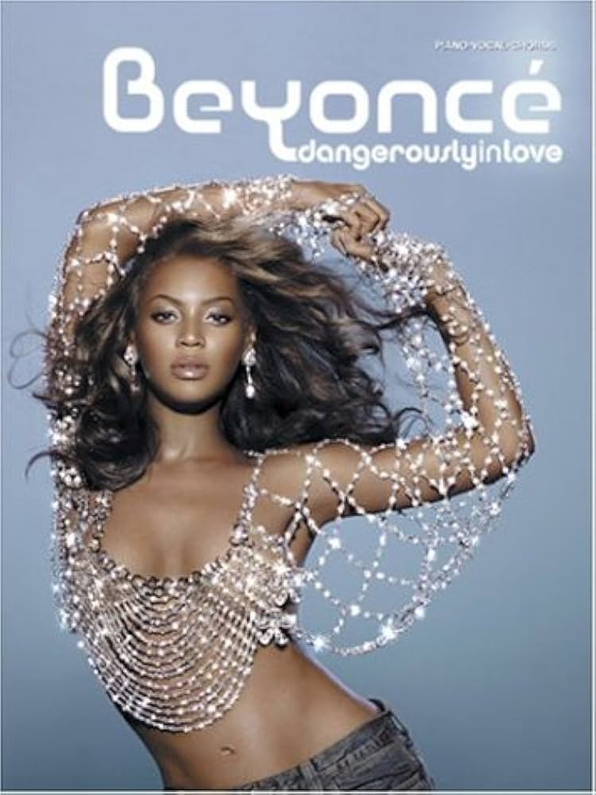

Top Años 70

Los éxitos más representativos de la década
La música de los años 70 marcó un antes y un después con el rock, la música disco y las baladas que definieron una generación.
Top Años 80

La década dorada del pop y el synthwave
Los 80 trajeron sonidos electrónicos, pop explosivo y artistas que se volvieron íconos mundiales.
Top 10
Top Años 90

La era del pop, el grunge y el dance
Los 90 mezclaron estilos como nunca antes: desde el pop juvenil hasta el rock alternativo y el eurodance.
Top 10
Top Años 2000
El inicio del nuevo milenio musical
Los 2000 mezclaron pop, R&B y rock alternativo, con artistas que dominaron radios, TV y los primeros años de internet.
Top 10
Top Años 2010

La era del streaming y los grandes hits virales
En los 2010, el streaming cambió la forma de escuchar música y los hits se volvieron globales en cuestión de horas.